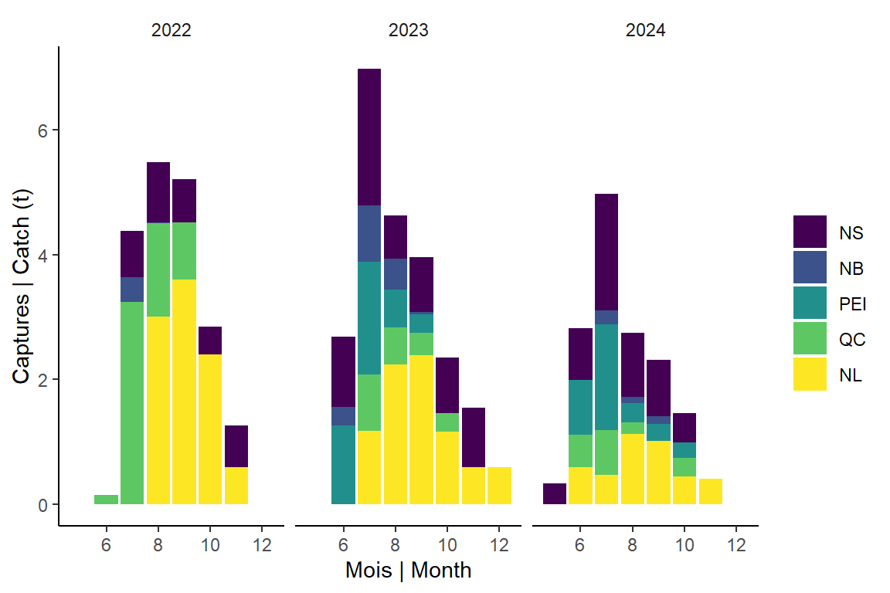

load all data
lfR <- paste0(dir.rdat,"lf.Rdata")
load(lfR)
# weight landed for S52 license samples
y <- 2024
sam <- lf[lf$year>=2022,]
sam <- sam %>% filter(source==91 | (source==99 & sample.id %in% c(73833:73838,73840))) %>%
dplyr::select('year','sample.id','month','wcatch','date','nafo','nbpc','source','gear','prov') %>% distinct()
sam[is.na(sam$wcatch),'wcatch'] <- 300 # temporary
nrow(sam) # wo two from Jerry
## [1] 231
catch.sam <- ddply(sam,c('year','month','nafo','gear','prov'),summarise,catch=sum(wcatch/1000))
catch.sam$country <- 'Canada'
catch.sam$source <- 'S52'
names(catch.sam)[which(names(catch.sam)=='gear')] <-'gear.cat'
pc<- catch.sam %>% ggplot(aes(x=month, y=catch, fill=prov)) +geom_bar(stat="identity") +facet_wrap(~year) +
scale_fill_viridis_d(name="")
pc + labs(x="Mois | Month", y="Captures | Catch (t)")

kable(catch.sam %>% group_by(year) %>% summarize(catchs52=sum(catch, na.rm=T)))
| 2022 |
19.325 |
| 2023 |
22.753 |
| 2024 |
15.070 |
write.csv(catch.sam, paste0("../../csv/",max(my.year), "/S52_catch.csv"), row.names=F)
catch.n <- sam %>% group_by(year, month, nafo) %>% tally() %>% pivot_wider(names_from=nafo, values_from=n)
catch.n<- catch.n %>% group_by(year, month) %>%
mutate(total = purrr::pmap_dbl(list(`4T`,`4S`,`4W`,`4X`,`3K`,`3L`,`4R`), sum, na.rm = TRUE))
total = catch.n %>% group_by(year) %>% summarise_all(sum, na.rm=T) %>% mutate(month="total")
catch.ntable<- bind_rows(catch.n %>% mutate(month=as.character(month)), total)
catch.ntable<- catch.ntable %>% mutate_at(vars(`4T`, `4S`, `4W` , `4X` , `3K`, `3L` , `4R`, total), ~ replace(., is.na(.), 0))
catch.ntable$country <- 'Canada'
catch.ntable$source <- 'S52'
write.csv(catch.ntable, paste0("../../csv/",max(my.year), "/Nlf_nafo.csv"), row.names=F)